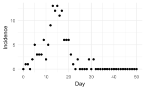
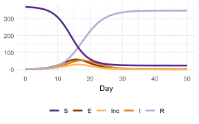
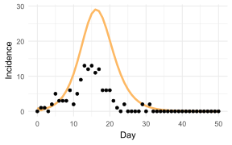
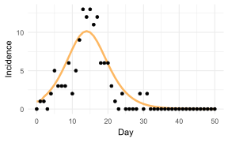

library(tidyr)
library(odin)
library(ggplot2)
library(RColorBrewer)5 Least squares estimation
5.1 Methods
Refer to Definition A.4, the residual sum of squares (RSS) is the sum of the squares of residuals.
\[RSS = \sum_{i = 1}^{n}[y_i - f(x_i)]^2\]
- \(y_i\): the observed value.
- \(f(x_i)\): the predicted value.
- \(y_i - f(x_i)\): the residual.
The least squares method finds the optimal parameters by minimizing the RSS.
5.2 Code
We will use data collected during a H1N1 influenza outbreak in an elementary school in Pennsylvania (Cauchemez et al., 2011). Let load the data and have a look.
df <- read.csv("data/flu_inc.csv")
ggplot(df, aes(x = day, y = inc)) +
geom_point() +
labs(x = "Day", y = "Incidence") +
theme_minimal()
We will fit a deterministic SEIR model and reuse the code from Listing 2.1. Let plug some initial values for the parameters and run the model.
Looking at the original paper, the school has 370 students (Cauchemez et al., 2011). So we set the initial values as below.
S0 <- 369
E0 <- 0
I0 <- 1
R0 <- 0Code
pred <- seir_mod(beta = 0.004, sigma = 0.5, gamma = 0.5, S0 = S0, E0 = E0, I0 = I0, R0 = R0, times = df$day)
df_plot <- pivot_longer(pred, cols = S:Inc, names_to = "comp", values_to = "n")
my_palette <- brewer.pal(11, "PuOr")[c(10, 1, 4, 3, 8)]
ggplot(df_plot, aes(x = t, y = n, color = comp)) +
geom_line(linewidth = 1.2) +
scale_color_manual(values = my_palette, breaks = c("S", "E", "Inc", "I", "R")) +
labs(color = NULL, y = NULL, x = "Day") +
theme_minimal() +
theme(legend.position = "bottom")
Now just plot the incidence to compare with our data.
Code
df_plot <- pred[,c("t", "Inc")]
ggplot(df_plot, aes(x = t, y = Inc)) +
geom_line(color = my_palette[3], linewidth = 1.2) +
geom_point(data = df, aes(x = day, y = inc)) +
labs(x = "Day", y = "Incidence") +
theme_minimal()
We need to calculate the residual sum of squares. The rss() function must be defined this way with 2 arguments data and par so that it could be passed to the optim() function.
rss <- function(data, par) {
pred <- seir_mod(beta = par[1], sigma = par[2], gamma = par[3], S0 = S0, E0 = E0, I0 = I0, R0 = R0, times = 0:(length(data) - 1))
sum((data - pred$Inc)^2)
}The optim() function needs at least 2 inputs:
par: a vector of initial values for the parameters to be optimized over.fn: a function to be minimized....: other arguments will be passed tofn, here our functionrss()needs an additional argumentdata, so we passdata = df$inc.
seir_optim <- optim(par = c(0.004, 0.5, 0.5), fn = rss, data = df$inc)
seir_optim$par
[1] 0.007665126 1.697323120 2.209129854
$value
[1] 147.9004
$counts
function gradient
197 NA
$convergence
[1] 0
$message
NULLLet plug these values into the model and compare with our data.
Code
pred <- seir_mod(beta = seir_optim$par[1], sigma = seir_optim$par[2], gamma = seir_optim$par[3], S0 = S0, E0 = E0, I0 = I0, R0 = R0, times = df$day)
df_plot <- pred[,c("t", "Inc")]
ggplot(df_plot, aes(x = t, y = Inc)) +
geom_line(color = my_palette[3], linewidth = 1.2) +
geom_point(data = df, aes(x = day, y = inc)) +
labs(x = "Day", y = "Incidence") +
theme_minimal()
Since we are using a “closed population” SEIR model, \(R_0 = \frac{\beta}{\gamma} S_0\).
rnum0 <- seir_optim$par[1] * S0 / seir_optim$par[3]
rnum0[1] 1.280337This is quite close to 1.4 (95% CI: 1.2, 1.5) as reported by (Cauchemez et al., 2011), considering that they used more complicated methods.